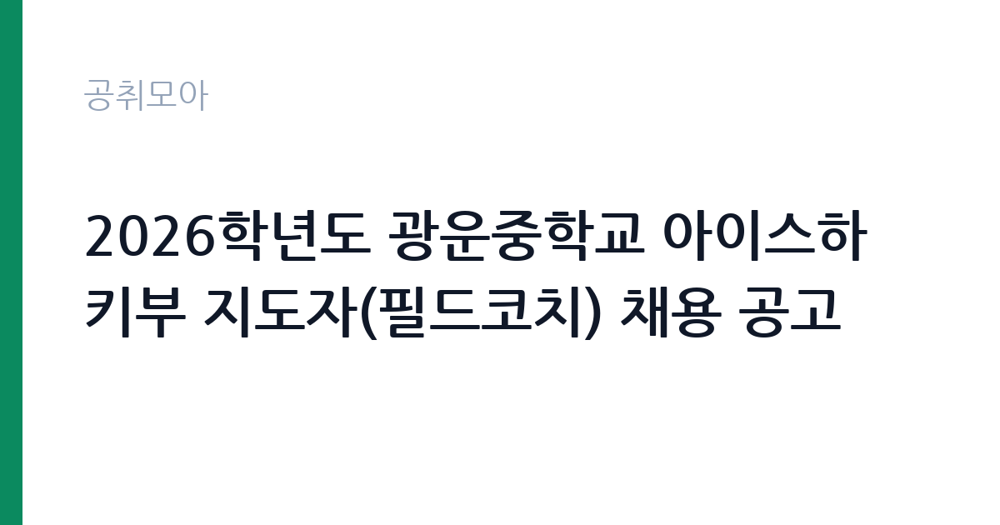

[교육청] 2026학년도 광운중학교 아이스하키부 지도자(필드코치) 채용 공고
서울특별시교육청 서울특별시북부교육지원청 광운중학교 · 서울 · 마감 2026-10-15 (D-4) · 출처 나라일터

한눈에 보는 모집 조건
| 기관 | 서울특별시교육청 서울특별시북부교육지원청 광운중학교 |
|---|---|
| 공고명 | 2026학년도 광운중학교 아이스하키부 지도자(필드코치) 채용 공고 |
| 고용형태 | 정규직 |
| 근무지 | 서울 |
| 게시일 | 2026-10-12 |
| 마감일 | 2026-10-15 (D-4) |
지원자격, 이렇게 읽으세요
- 아이스하키부 지도자(필드코치) 1명
- 접수 ~2026-10-15 마감
- 세부 조건은 원문 공고문 확인
자격요건은 체육지도자 관련 자격증 소지자 또는 중등학교와 대학, 실업팀 선수 경력자 중 하나 이상에 해당하면 됩니다. 인정되는 자격증은 1급과 2급 전문스포츠지도사와 생활스포츠지도사, 건강운동관리사, 장애인스포츠지도사, 유소년스포츠지도사, 노인스포츠지도사 중 1가지 이상입니다. 아이스하키라는 특수 종목 특성상 해당 종목 선수 경력이나 지도 경험이 있으면 서류 심사에서 강점이 됩니다. 계약기간은 2026년 11월 1일부터 2027년 1월 31일까지이며, 이메일 접수 주소는 kwms1934@sen.go.kr입니다.
이 공고의 포인트
이 공고의 특징은 종목이 아이스하키라는 점입니다. 국내에서 학교 아이스하키부를 운영하는 중학교가 많지 않아, 해당 종목 지도 경력을 쌓을 수 있는 자리 자체가 귀합니다. 계약기간이 3개월로 짧지만 동계 시즌과 겹치는 시기라 실전 지도 경험을 밀도 있게 쌓을 수 있습니다. 접수 기간이 사흘뿐이니 자격증을 갖춘 분은 공고를 보는 즉시 서류를 준비하셔야 합니다.
전형은 어떻게 진행되나
이메일 접수 후 서류심사와 면접심사를 거쳐 최종 합격자를 선발하는 것이 학교운동부 지도자 채용의 일반적인 흐름입니다. 접수 기간은 2026년 10월 12일부터 10월 15일 오전 9시까지로, 접수 기간 외 제출 서류는 인정되지 않습니다. 심사 단계와 합격자 발표 일정은 반드시 첨부된 채용 공고문에서 확인하십시오.
원문에서 확인한 전형 방식
○ 모집분야 : 아이스하키부 지도자 1명 ○ 선발직급 : 필드코치 ○ 자격요건 : 다음 공통 자격요건에 해당하는 자 ① 1·2급 전문·생활스포츠지도사, 건강운동관리사, 1·2급 장애인스포츠지도사, 유소년스포츠지도사, 노인스포츠지도사 자격증 중 1가지 이상 취득한 자 ② 중등학교·대학·실업팀 선수 경력자 ○ 계약기간 : 2026. 11. 1. ~ 2027. 1. 31. ○ 접수기간 : 2026. 10. 12.(월) ~ 2026. 10. 15.(목) 09:00까지 ※ 접수기간 외 제출된 서류는 접수로 인정하지 않음. ○ 응시방법 : 이메일 접수(kwms1934@sen.go.kr) ○ 문의처 : 02-942-2372 자세한 내용은 반드시 첨부된 채용 공고문을 확인하시기 바랍니다.
이런 분께 추천해요
- 아이스하키 선수 경력이나 빙상 종목 지도 경험이 있는 분입니다. 희소한 종목 경력을 학교 현장에서 이어갈 수 있는 자리입니다.
- 체육지도자 자격증을 보유하고 학교운동부 코치로 커리어를 시작하려는 분입니다. 전임은 아니지만 현장 경력의 첫줄을 만들 수 있습니다.
- 방학과 동계 시즌을 활용해 집중적으로 지도 경험을 쌓고 싶은 분입니다. 3개월 계약의 성격을 이해하고 지원하는 분에게 맞습니다.
지원 전 체크리스트
- 보유한 자격증이 공고문의 인정 자격 목록에 포함되는지 확인하셨습니까.
- 선수 경력증명서와 자격증 사본을 접수 마감 전에 발급받으셨습니까.
- 접수 마감이 10월 15일 오전 9시로 이른 오전임을 달력에 표시하셨습니까.
- 계약기간 3개월과 필드코치의 역할 범위를 이해하고 지원하셨습니까.
모집 일정과 제출 타이밍
접수 기간은 2026년 10월 12일부터 10월 15일 오전 9시까지로 단 3일입니다. 마감시각이 오전 9시라 사실상 14일까지는 이메일 발송을 마쳐야 안전합니다. 주말이 낀 일정이므로 증명서 발급이 필요하면 12일 당일에 신청하시고, 자기소개서는 미리 초안을 잡아 두시기를 권합니다.
직무 이해하기: 교육청
학교운동부 필드코치는 학생선수의 기술 훈련과 체력 관리, 대회 출전 인솔을 맡습니다. 아이스하키부는 빙상장 훈련 일정에 맞춘 새벽과 야간 훈련이 잦고, 동계 시즌에는 대회 출전이 집중됩니다. 학생선수의 학습권 보장과 안전 관리까지 책임지는 자리라, 기술 지도 능력과 생활 지도를 병행하는 역할입니다.
자기소개서 작성 팁
자기소개서는 선수 경력과 지도 철학을 중심으로 쓰십시오. 본인의 포지션과 경력, 지도 경험이 있다면 어떤 연령대를 어떻게 가르쳤는지 구체적으로 서술하시고, 중학생 선수들의 성장 단계에 맞는 지도 계획을 한 문단으로 제시하십시오. 안전 관리와 학습 병행에 대한 인식도 함께 보여주시면 좋습니다.
면접 준비 포인트
면접에서는 종목 전문성과 학생선수 지도관, 훈련 중 안전사고 대응 방안을 묻습니다. 아이스하키 훈련의 특성과 중학생 연령대 지도 경험을 연결해 답변하시고, 학부모와 소통하는 방식에 대한 질문도 미리 준비하십시오.
급여·근무조건 읽는 법
학교운동부 지도자의 보수는 교육청의 코치 인건비 기준에 따라 지급되며, 전임과 필드에 따라 적용 단가가 다릅니다. 정확한 월 보수와 수당, 4대보험 적용 여부는 해당 공고문의 근로조건에서 확인하셔야 합니다. 3개월 단기 계약이라 퇴직금과 연차 관련 조건도 원문에서 대조하십시오.
자주 묻는 질문
- 필드코치와 전임코치는 무엇이 다릅니까?
전임코치가 팀 운영 전반을 책임지는 상근 지도자라면, 필드코치는 훈련 현장 지원을 중심으로 근무하는 형태가 일반적입니다. 근무시간과 보수 기준이 다르므로 해당 공고문의 근로조건에서 확인하십시오. - 자격증 없이 선수 경력만으로 지원이 가능합니까?
이 공고는 자격증 소지자 또는 선수 경력자 중 하나 이상 해당하면 지원이 가능합니다. 다만 종목 관련 자격증이 있으면 서류 심사에서 유리할 수 있습니다. - 계약 종료 후 연장이 가능합니까?
학교운동부 지도자 계약은 학기 단위로 운영되며, 학교 사정과 예산에 따라 연장 여부가 결정됩니다. 연장을 염두에 둔다면 지도 성과와 근무 평가를意識하고 임하시기를 권합니다.
함께 보면 좋은 공고
[교육청] 2026학년도 광운중학교 핸드볼부 지도자(전임코치) 채용 공고 — 마감 2026-10-23[교육청] 인천특수교육지원센터 기간제 교육공무직(치료사-작업치료사) 채용 공고(3차) — 마감 2026-10-16[교육청] 2026년 제11회 경기도교육청 임기제공무원 채용시험 공고[홍보기획(5급), 언론(7급), 교육공무직원 소통·관리(5급)] — 마감 2026-10-19출처: 나라일터 공개정보를 바탕으로 공취모아가 정리한 안내글입니다. 모집 조건·일정은 변경될 수 있으니 지원 전 반드시 원문 공고문을 확인하세요. 본 글은 정보 제공용이며 합격을 보장하지 않습니다.